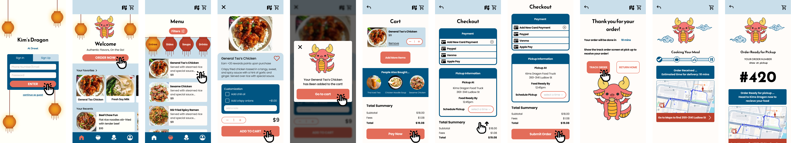

User Persona
For much of our design and audience research, we were able to refer to IDM215 for the information. Here we have Madeline James, who represents the average college student struggling to find an affordable and accessible meal between her busy schedule.

Her journey map outlines the different stages of her ordering process including her thoughts and motivations behind each action.

Critical Path
Adjusting the original version to touch up obvious mistakes, we created a basic critical path to showcase the navigation of our main flow.
Usability Testing
Upon refining the previous prototype, We began a series of usability tests and additional development based on feedback. Here we had three stages of testing: the Alpha, the Beta, and the Final. Every stage included five user interviews conducted with an updated usability test script and core developmental features that were added.
As the lead data architect and secondary designer, I was heavily involved in this project's design and research aspects. From the tests, we were able to add microinteractions, transitions between pages, button designs, and more.
VIEW FINALTakeaways
This project required me to collaborate with professionals in fields I was unfamiliar with, which pushed me to approach the problem from an entirely new perspective. I had to learn about mechanical properties that shaped how textile engineers evaluated yarns and balanced user needs with research accuracy. Through this process, I strengthened my ability to translate complex technical data into intuitive interfaces and design effectively within existing system constraints.